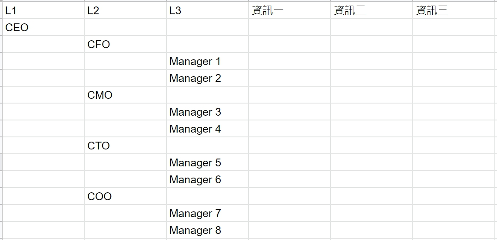
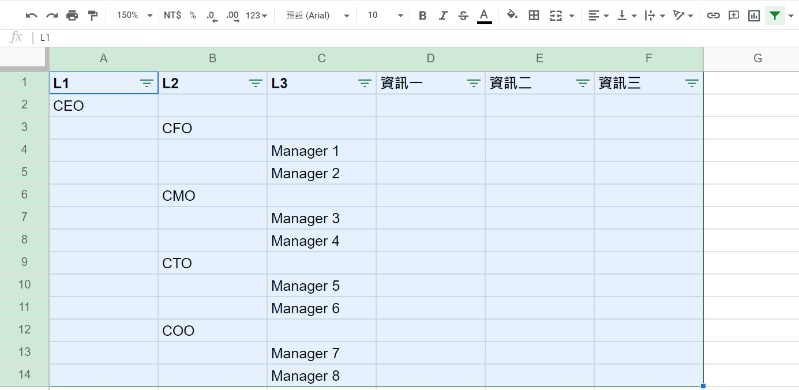
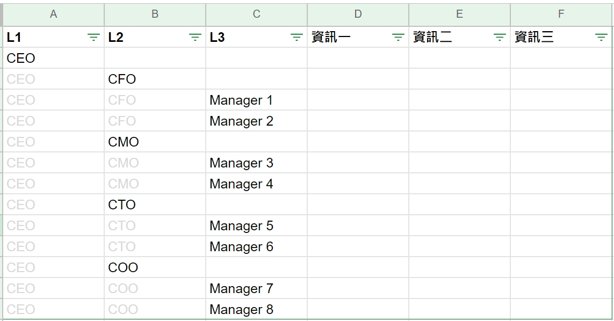

用Google Sheet管理樹狀結構資料
如何設計一個適合管理tree srtucture的表單
緣起：
在做專案管理時，需要盤整一個樹狀架構，內含約5000個項目。因此，團隊需要一個方便查看、查詢、修改及維護的表單。
思路：
- 樹狀架構的精隨在於可以一眼看出各層的從屬關係，在設計表單的過程中需要顧慮這一點
- 使用Google Sheet的目的在於想要利用其篩選功能，快速了解各層狀況
- 因架構常常變動，設計上需要易於閱讀及維護
STEP 1 - 列出樹狀圖：

原始樹狀圖
STEP 2 - 將樹狀圖填入Excel：
STEP 3 - 選取範圍後新增篩選功能：
STEP 4 - 填滿表格缺空：
配合篩選功能，將公式"=INDIRECT(ADDRESS(ROW()-1,COLUMN()))"填入各層下方缺空處，並將填入的字體設為灰色。
完成後，因為顏色的關係，你不會因為表格被填滿，而無法一眼看出樹狀結構各層的從屬關係，但卻可以因此享受篩選功能的便利。
舉例來說，當你想要查看所有L2的資訊時，你只需在L3篩選器選取「僅顯示空白」，便可以看到所有L2的狀態。你也可以在L3篩選器，只選取空白以外的所有選項，而後排序資訊欄的從A→Z，便可以只查看L3的資訊列大小關係。